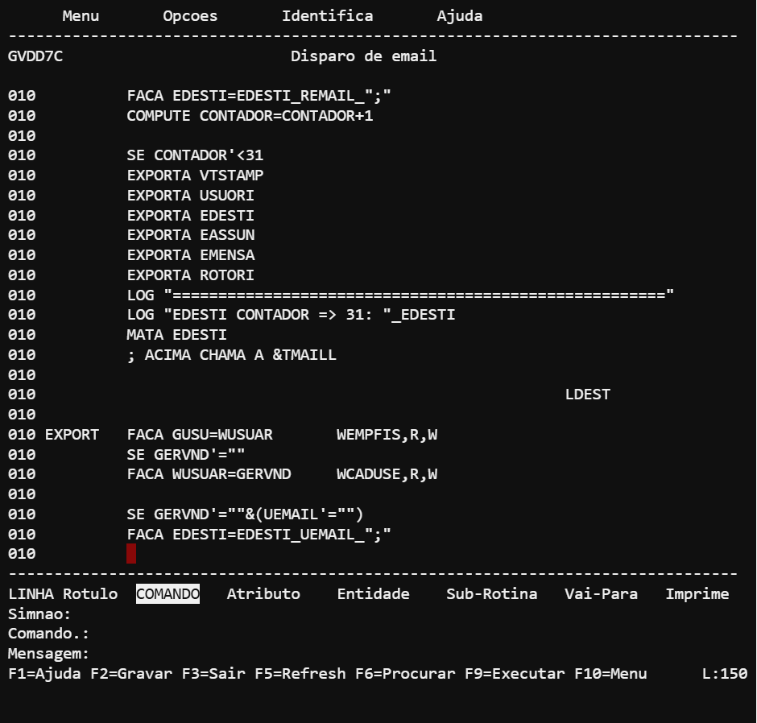

Bem-vindo ao Manual Opuscase! Este Manual destina-se a orientar o programador/analista de sistemas que irá utilizar o OPUScase para a geração de rotinas. Para melhor aproveitamento do conteúdo do manual. recomendas-se observar primeiramente os itens abaixo:
- Quem deve usar este manual?
- Pré-Requisitos
- Como interpretar a tela de uma rotina
- Terminais suportados pelo sistema
- Como funciona o teclado
- Como ler os diagramas de sintaxe
1.1 Introdução ao OPUScase
O OPUScase é um produto do tipo I-CASE (Integrated Computer Aided Engeneering). Permite aos profissionais de informática desenhar e gerar aplicações de forma rápida. fácil. segura. livre de erros de sintaxe e auto-documentada. possibilitando desta maneira uma maior produtividade no desenvolvimento de sistemas computorizados. O OPUS case é composto de:
- Dicionário de Dados
- Editor de Telas de Entrada/Saída
- Linguagem 4GL em português
- Gerador de Rotinas em linguagem C
- Gerenciador de Bando de Dados
- Documentador de Manuais
1.2 Quem deve usar este manual
Este manual deve ser utilizado pelo pessoal técnico que irá desenvolver rotinas atravavés do OPUScase.servindo como fonte de consulta para dirimir eventuais duvidas que venham surgir na utilização do sistema. É um complemento do manual de usuário onde você irá encontrar as definições que o OPUScase utiliza. Eventuais duvidas poderão ser eliminadas através da utilização dos exemplos contidos no Manual "O ABC do OPUScase".
1.3 Pré-Requisitos
Para desenvolver rotinas em OPUScase, apesar de ser fácil c simples, é recomendável que você tenha o conhecimento dos seguintes assuntos:
- Conhecimento de Análise Orientada por Objetos
- Funções Básicas de Unix,
- Programação em linguagem "C".
1.4 Como Interpretar a tela de uma rotina
As rotina geradas pelo OPUScase seguem a padronização SAA-CUA (System Architeture Application - Common Users Acess). assim todas elas obedecem as definições abaixo:

Para instalar o Opuscase em seu ambiente, siga os passos abaixo:
Pré-requisitos
- Servidor com PHP 7.4 ou superior
- MySQL 5.7 ou superior
- 2GB de RAM disponível
- 10GB de espaço em disco
Passo a Passo
- Baixe o pacote de instalação
- Extraia os arquivos no diretório do servidor
- Crie o banco de dados MySQL
- Configure o arquivo config.php
- Acesse o instalador via navegador
- Siga as instruções na tela
Após a instalação, é necessário configurar o sistema conforme as necessidades da sua empresa.
O Opuscase é dividido em módulos funcionais que podem ser ativados conforme a necessidade.
O módulo de acordos permite o gerenciamento completo de negociações comerciais.
Cadastro e gerenciamento de clientes do sistema.
| Cliente | CNPJ | Grupo | Status |
|---|---|---|---|
| VINCAO SORRISO DE MARILIA LTDA | 10.543.116/0001-03 | 000202 DULIN | Ativo |
| PORTO DE REGISTRO TRANSPORTES LTDA | 21.966.029/0001-00 | 000202 DULIN | Ativo |
Cadastro e controle de produtos e serviços.
| Seq. | Cod. Int. | Produto | Qtd. | Preço Acordado | Status |
|---|---|---|---|---|---|
| 0001 | 1190078080 | TIM - VIANA | 15 | R$ 746,70 | Ag. Aprovação |
| 0002 | 1190078761 | TIM - VIANA | 20 | R$ 597,64 | Ag. Aprovação |
| 0003 | 1192007212 | TIM - VIANA | 10 | R$ 957,33 | Ag. Aprovação |
O sistema oferece diversos relatórios para acompanhamento e análise dos dados.
Em caso de dúvidas ou problemas, nossa equipe de suporte está à disposição.
Telefone: (11) 4000-1234
Horário: Segunda a Sexta, das 8h às 18h
Como recupero minha senha?
Acesse a tela de login e clique em "Esqueci minha senha". Digite seu e-mail cadastrado e siga as instruções.
Posso acessar o sistema pelo celular?
Sim! O Opuscase é responsivo e pode ser acessado por qualquer dispositivo com navegador.
Como faço backup dos dados?
O backup é realizado automaticamente diariamente. Para backup manual, acesse Administração > Backup.
Quantos usuários posso cadastrar?
O número de usuários depende do plano contratado. Consulte seu contrato ou fale com nosso comercial.